|
Descrição do Sistema
Power Train Manager (PTM)

|
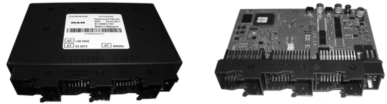
Introdução
O presente manual de reparos deve
ajudar a realizar, de maneira apropriada, os reparos em veículo e
agregados, pois representa as condições técnicas
conhecidas até o fechamento da edição da redação.
A existência dos conhecimentos
técnicos necessários para o manuseio de veículos e agregados foi
pressuposta na elaboração deste impresso.
As representações ilustrativas e as
descrições são condições típicas ou momentâneas, que podem não
corresponder diretamente ao agregado ou a seus periféricos. Sendo
assim, planejar ou realizar os trabalhos contando com esta
característica.
Trabalhos de reparo mais comlexos devem ser direcionados à Assistência
Técnica Man Latina América. Neste texto existem referências
separadas para estes agregdos.
Observar as instruções de segurança a seguir:
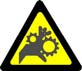
|
Cuidado
Tipo e fonte do perigo
Refere-se a procedimentos de trabalho e operacionais que devem ser observados para previnir perigo para as pessoas.
|

|
Atenção
Tipo e fonte do perigo
Refere-se a procedimentos de trabalho e operacionais que devem ser
observados para eliminar a possibilidade de danificar ou destruir
materiais.
|

|
Nota
Descrição explicativa útil para a compreensão do procedimento de trabalho ou de funcionamento.
|
Avisos de segurança
Geral
Para trabalhos de operação, manutenção e reparo em caminhões e ônibus, apenas pessoal treinado deve ser empregado.
Os seguibntes resumos contêm extratos de regulamentos
importantes para a prevenção de acidentes com dano a pessoas, material
e ambiente, separados conforme os aspectos principais. Eles são apenas
umbreve extrato dos diversos regulamentos de prevenção de acidentes.
Fica entendido que também todos os demais regulamentos de segurança
devem ser observados e que as correspondentes medidas devem ser tomadas.
Avisos adicionais para perigos aparecem nas instruções, nos possíveis pontos de perigo.
Se acontecer um acidente apesar de todas as medidas de prevenção, especialmente por contato
com ácido, penetração de combustível na pele, queimadura por óleo aquecido, respingos de fluido
anticongelante nos olhos, esmagamento de membros etc., o médico deve ser consultado imediatamente.
1. Regulamento para a prevenção de acidentes com danos pessoais
Trabalhos de teste, ajuste e reparo
– Segurar os agregados durante a remoção.
– Apoiar o chassi durante trabalhos na mola pneumática ou no sistema de suspensão.
– Manter livre de óleo e graxa os agregados, escadas, apoios e seus arredores.
– Trabalhar apenas com ferramentas em perfeito estado.
– Trabalhos de teste, ajuste e reparo devem ser executados apenas por pessoal qualificado e autorizado.
Trabalhos no sistema de freios
– Se houver liberação de pó durante trabalhos no sistema de freios, um equipamento de aspiração de
pó deve ser utilizado.
– Após cada trabalho no sistema de freios, executar uma inspeção visual, de função e de efetividade
conforme
– Examinar o funcionamento dos equipamentos ABS/ASR com sistemas de teste adequados (por ex.
MAN-cats).
– Recolher qualquer fluido de freio escorrido.
– O fluido de freio é venenoso! Não permitir o contato com feridas abertas ou alimentos.
– Os fluidos hidráulico e de freio são lixo tóxico!
Observar os regulamentos de segurança para prevenção de danos ambientais.
Trabalhos em veículos com instalação de gás natural (CNG)
– Veículos com instalação de gás natural defeituosa não devem ser trazidos ao interior da oficina. Veículos
cujo motor não pode ser desligado por meio do esvaziamento automático das linhas de retirada de
combustível.
– Para realizar trabalhos em veículos com instalação de gás natural, dispositivos sensores de presença
de gás devem ser posicionados no teto do veículo e no compartimento do motor sobre o controlador
de pressão. Dispositivos adicionais de advertência de presença de gás devem ser carregados pelas
pessoas que trabalham no veículo.
– Nos setores de trabalho onde trabalhos em veículos com instalação de gás natural são executados, fumar
é Toda e qualquer fonte de ignição deve ser retirada deste setor.
– Para realizar trabalhos de solda, os tanques de gás pressurizado devem ser removidos e as linhas
condutoras de gás devem ser enxaguadas com gás inerte.
– Tanques de gás pressurizado não devem ser submetidos a temperaturas acima de 60° C nas cabines
de secagem de pintura. Para temperaturas mais elevadas, os tanques de gás pressurizados devem
ser removidos do veículo ou desgaseificados e enxaguados com gás inerte como por ex. nitrogênio;
adicionalmente, as linhas condutoras de gás precisam ser enxaguadas com gás inerte.
Trabalhos na instalação de gás natural (CNG)
– Trabalhos na instalação de gás natural devem ser executados apenas por pessoas especialmente
treinadas para isto.
– O setor de trabalho para a instalação de gás natural deve estar equipado com uma ventilação técnica
adequada. A ventilação deve renovar o ar do ambiente pelo menos 3 vezes por hora.
– Após substituição de componentes de série da instalação de gás natural, em conformidade com os
procedimentos obrigatórios, os pontos de montagem devem ser verificados quanto à estanqueidade.
A verificação deve ser realizada com spray para detecção de vazamentos ou com um dispositivo
de advertência de presença de gás.
Funcionamento do motor
– Partida e operação do motor são permitidas apenas por pessoal autorizado.
– Com o motor em funcionamento, ficar afastado dos componentes que giram e usar roupas justas de
trabalho. Acionar o sistema de ventilação em ambientes fechados.
– Perigo de queimaduras em trabalhos nos motores em temperatura de funcionamento.
– Na abertura do circuito quente de arrefecimento existe perigo de queimaduras.
Cargas suspensas
– Pessoas não devem permanecer sob cargas suspensas.
– Utilizar apenas talhas tecnicamente adequadas com
Carroçarias ou carroçarias especiais
– Para carroçarias ou carroçarias especiais observar os avisos/regulamentos de segurança dos
correspondentes fabricantes das carroçarias.
Trabalhos em linhas de alta pressão
– Tubulações e mangueiras pressurizadas (circuito do óleo lubrificante, circuito do líquido de arrefecimento
e circuito hidráulico)
Perigo de ferimento por líquidos liberados sob pressão!
Teste de bicos injetores
– Usar equipamento de proteção apropriada.
– Não expor nenhuma parte do corpo ao jato de combustível durante o teste dos bicos injetores.
– Não aspirar o borrifo de combustível, providenciar ventilação adequada.
Trabalhos no sistema elétrico do veículo
– Não desconectar as baterias com o motor em funcionamento!
– Para trabalhos na eletrônica do veículo, na elétrica central, no gerador e no motor de partida, de princípio
as baterias devem ser desconectadas! Para desconectar as baterias, desconectar primeiro os terminais
negativos. Para conectar, primeiro instalar os terminais positivos.
– Para medições em conectores, utilizar apenas cabos deteste ou adaptadores de teste apropriados!
– Em caso de temperaturas esperadas acima de 80°C (por ex. no forno de secagem após a pintura),
posicionar o interruptor principal das baterias em "OFF" e a seguir remover os módulos de controle.
– O chassi não foi projetado para servir de conexão de retorno de massa! Para instalações posteriores -
por ex. de um elevador para cadeira de rodas - conexões de massa adicionais com seção adequada
precisam ser instaladas, uma vez que uma conexão de massa pode ser criada através de cabos de
tração, chicotes elétricos, eixos de engrenagens, engrenagens, etc. Danos sérios são o resultado.
Atenção! Gases das baterias são explosivos!
– Em compartimentos fechados para as baterias a formação de gás de hidrogênio é possível. Atenção
especial após longas viagens e após recarga da bateria com equipamento de recarga.
– Ao desconectar as baterias, existe a possibilidade através de consumidores permanentes, que não
podem ser desligados, tacógrafos etc., que sejam produzidas faíscas que acendam o gás. Antes de
desconectar as baterias, ventilar o compartimento das baterias com ar comprimido!
– Rebocar o veículo para dar a partida somente com as baterias conectadas! Rebocar o veículo para dar a
partida somente com as luzes de controle ainda brilhando fortemente, porém sem capacidade das
baterias de fornecer a energia necessária para a partida do motor.
Sem partida assistida por meio de equipamento de carga rápida!
– Carga e carga rápida das baterias somente com os cabos positivo e negativo desconectados!
– Sem carga rápida para baterias com gel de chumbo e baterias livres de manutenção! (não no caso de
"livre de manutenção conforme DIN") A potência máxima de carga é de 10% da capacidade indicada
de cada bateria. Para conexão em paralelo a capacidade aumenta - conforme a soma das baterias
conectadas em paralelo.
– Inversão de pólos das baterias causa perigo de curto circuito!
– Não colocar sobre as baterias nenhum objeto metálico (chave, alicate, etc.) que possa fazer ponte
entre os pólos. Perigo de curto circuito!
– Desconectar e recarregar a cada 4 semanas as baterias de veículos desativados por longos períodos.
Cuidado! O ácido da bateria é venenoso e corrosivo!
– Usar roupa protetora adequada (luvas) durante o manuseio de baterias.
Não inclinar as baterias, vazamento de ácido. Baterias com gel também não inclinar.
– Medições de tensão somente com instrumentos de medição adequados! A resistência de entrada de um
instrumento de medição deve ser de no mínimo 10 MΩ.
– Separar ou conectar os conectores das unidades eletrônicas de controle somente com a ignição
desligada!
Solda elétrica
– Ligar o dispositivo de proteção „ANTIZAP-SERVICE-WÄCHTER“ (Número de peça MAN 80.78010.0002)
conforme instruções que acompanham o dispositivo.
– Se este dispositivo não estiver disponível, desligar os cabos da bateria e estabelecer entre o cabo
positivo e o cabo negativo da bateria
– Posicionar o interruptor principal manual da bateria em Condução. Com o interruptor principal eletrônico
da bateria, fazer ponte do „Negativo“ nos contatos do relé de carga (Cabo para ponte > 1mm2) como
também ponte do „Positivo“ nos contatos de carga do relé de carga. Adicionalmente, ligar muitos
consumidores elétricos como: interruptor de partida (ignição) na posição Condução, sinalizadores de
emergência „on“, interruptores de iluminação na posição „Faróis on“, ventilador elétrico na posição
„Estágio máximo“ . Quanto mais consumidores ligados, maior a proteção.
Após o termino dos trabalhos de solda elétrica, desligar primeiro todos os consumidores, retirar todas as
pontes (restaurar as condições originais) e, então, conectar as baterias.
– Em todos os casos, ligar a massa do equipamento de solda em lugar mais próximo possível ao ponto de
solda, O cabo do equipamento de solda não deve ser colocado em posição paralela a linhas elétricas
dentro do veículo.
Trabalhos em tubos plásticos - Perigo de danos e de incêndio
– Tubos plásticos não devem ser submetidos a cargas mecânicas ou térmicas.
Trabalhos de pintura
– Durante trabalhos de pintura, os componentes eletrônicos podem ser submetidos a elevadas temperaturas
(máx. 95° C) a máx. 85° C, uma exposição por aprox. 2 horas é admissível, desconectar as baterias.
As conexões roscadas da parte de alta pressão do conjunto de injeção não devem ser pintadas. Perigo
de penetração de detritos no caso de reparo.
Trabalhos com a cabine inclinada
– Manter desobstruído o alcance da inclinação da cabine.
– Não permanecer entre cabine e chassi durante o processo de inclinação da cabine, setor de perigo!
– Inclinar a cabine sempre sobre o ponto de inclinação ou apoiar a cabine por meio de uma barra de suporte.
Trabalhos no ar condicionado
– O agente refrigerante e seus vapores são prejudiciais à saúde, evitar o contato, proteger os olhos e as
mãos.
– Não liberar o agente refrigerante em forma de gás em ambientes fechados.
– Não misturar o agente refrigerante livre de FCKW R 134a com o agente refrigerante R 12 (FCKW).
– Descartar os agentes refrigerantes conforme regulamento.
Trabalhos nas unidades de airbag e tensionador de cinto de segurança
– Trabalhos nas unidades de airbag e tensionador de cinto de segurança devem ser executados apenas
por funcionários que podem comprovar a assistência a um treinamento específico na Academia de
Serviço MAN.
– Cargas mecânicas, trepidações fortes, aquecimento a temperaturas acima de 140° C e impulsos elétricos,
como também descargas eletrostáticas podem provocar um acionamento não intencional das unidades
de airbag ou tensionador de cinto de segurança.
– No acionamento da unidade de airbag ou tensionador de cinto de segurança são liberados gases quentes
de modo explosivo, uma unidade de airbag ou tensionador de cinto de segurança não devidamente
montada pode ser catapultada de modo incontrolável em qualquer direção. Isto causa perigo de
ferimentos para pessoas que se encontram na cabine ou nas proximidades.
– Existe perigo de queimadura ao tocar nas superfícies quentes do airbag logo após o acionamento.
– Não abrir o airbag e a bolsa amortecedora deflagrados.
– Não tocar com as mãos desprotegidas o airbag com a bolsa amortecedora destruída. Usar luvas
protetoras de borracha nitrila.
– Antes de qualquer trabalho ou teste em unidades de airbag ou tensionador de cinto de segurança dentro
do veículo com as trepidações que devem ser esperadas, desligar a ignição e retirar a chave de ignição,
separar a conexão de massa da bateria e separar o conector da alimentação de corrente do airbag
e tensionador de cinto de segurança.
– Montar o sistema de airbag e retenção do motorista, conforme instrução de uso sobre o volante de direção para airbag.
– Realizar testes de unidades de airbag e tensionador de cinto de segurança apenas com os equipamentos
previstos especialmente para esta finalidade, não usar lâmpadas de teste, voltímetros ou ohmímetros.
– Após qualquer trabalho o teste, desligar primeiro a ignição, e, então, ligar o(s) conector(es) para airbag
Durante esta operação ninguém deve permanecer no compartimento do motorista.
– Acomodar as unidades de airbag sempre individualmente com a parte amortecedora voltada para cima.
– Não tratar os airbags e tensionadores de cinto de segurança com graxa ou produtos de limpeza.
– Transportar e armazenar as unidades de airbag e tensionador de cinto de segurança exclusivamente nas
embalagens originais. O transporte no compartimento de passageiros é proibido.
– O armazenamento de unidades de airbag e tensionador de cinto de segurança é permitida somente em
depósitos que podem ser fechados e somente até um limite de 200 kg.
Trabalhos no aquecimento estacionário
– Antes do início dos trabalhos, desligar o aquecedor e permitir que todos os componentes quentes se
esfriem.
– Para trabalhos no sistema de combustível providenciar recipientes adequados para captação de
combustível e assegurar que não existam fontes de ignição.
– Dispositivos adequados de combate ao incêndio devem estar disponíveis com facilidade nas
proximidades!
– O aquecedor não deve ser operado sem exaustor em ambientes fechados como garagens ou oficinas.
2. Avisos para a prevenção de danos e desgaste prematuro em agregados
Geral
– Agregados são construídos exclusivamente para a finalidade de utilização correspondente ao alcance do
fornecimento - como definido pelo fabricante do equipamento - (utilização conforme destinação): Qualquer
uso além desta destinação é considerado em desconformidade com a destinação. Danos resultantes
disto não são da responsabilidade do fabricante. O correspondente risco é exclusivamente do usuário.
– Parte do uso em conformidade com a destinação é também o cumprimento das condições de operação,
serviço técnico e manutenção, impostas pelo fabricante.
– Utilização, manutenção e reparo do agregado somente devem ser realizados por pessoas familiarizadas
com o equipamento e informados sobre os perigos.
– Modificações do motor por conta própria anulam a responsabilidade do fabricante por danos resultantes
de tal modificação.
– Ainda, manipulações no sistema de injeção e controle podem influenciar o comportamento de
desempenho e emissões do agregado. Por este motivo, o cumprimento das obrigações por lei de
proteção ambiental não é mais garantido.
– Investigar e eliminar imediatamente as causas de interferências no funcionamento.
– Antes de iniciar reparos, limpar os agregados completamente e assegurar que todas as aberturas, nas
quais não devem penetrar detritos por motivo de segurança e função, estejam fechadas.
– Jamais deixar o agregado entrar em funcionamento sem o devido abastecimento do óleo lubrificante.
– Jamais deixar o motor entrar em funcionamento sem o devido abastecimento do líquido de arrefecimento.
– Marcar agregados sem condições de funcionamento com um correspondente cartaz de aviso.
– Utilizar somente materiais operacionais conforme as recomendações para materiais operacionais da
MAN, sob pena de cancelamento da garantia do fabricante.
– Não exceder a marca do nível máximo ao abastecer o óleo do motor e da transmissão. Não exceder a
inclinação máxima permitida na operação do veículo.
– Em caso de desativação ou armazenamento de ônibus ou caminhões por períodos superiores a 3 meses,
medidas especiais conforme norma da fábrica MAN M 3069 Parte 3 são necessárias.
3. Limitação da responsabilidade civil para peças de reposição e acessórios
Geral
Utilize para o seu veículo MAN apenas acessórios e peças originais MAN expressamente liberados pela
MAN Nutzfahrzeuge AG. Para todos os demais produtos, a MAN Nutzfahrzeuge AG não assume nenhuma
responsabilidade.
4. Regulamento para a prevenção de danos à saúde e ao ambiente
Medidas de precaução para a proteção da sua saúde
Evite o contato prolongado, excessivo e repetido da pele com os materiais operacionais, materiais
operacionais auxiliares, diluentes ou solventes. Proteja a sua pele por meio de agentes protetores da pele
ou luvas protetoras adequados. Para limpar a pele, não use materiais operacionais, materiais operacionais
auxiliares, diluentes ou solventes. Para cuidar da pele após a limpeza use creme oleoso para a pele.
Materiais operacionais e materiais operacionais auxiliares
Para drenar e armazenar materiais operacionais e materiais operacionais auxiliares não devem ser usados
recipientes de alimentos ou bebidas. Para o descarte de materiais operacionais e materiais operacionais
auxiliares observar os regulamentos das autoridades locais.
Líquido de arrefecimento
Tratar o fluido anticongelante como lixo tóxico. Para o descarte de líquidos de arrefecimento usados
(mistura de fluido anticongelante com água) observar os regulamentos das autoridades locais competentes.
Limpar o circuito de arrefecimento
Produtos líquidos de limpeza e água usada para enxaguar somente podem ser descartados para o
esgoto se não houver limitações para isto através de regulamentos locais especiais. Requisito básico é o
processamento dos produtos líquidos de limpeza e da água usada para enxaguar através de um separador
de óleo com captação de lodo.
Limpar o elemento filtrante
Durante a limpeza do elemento com ar comprimido, deve ser assegurado que o pó do filtro seja eliminado
através de um equipamento de aspiração de pó ou coletado em uma bolsa de captação de pó. Além disto,
usar proteção respiratória. Durante a lavagem do elemento, proteger as mãos com luvas de borracha ou
creme para a pele, uma vez que os produtos de limpeza são fortes solventes de oleosidade.
Óleo do motor e da transmissão, cartuchos, caixas e elementos filtrantes, elementos secantes
Elementos, caixas e cartuchos filtrantes (Filtros de óleo e de combustível, elementos secantes do secador
de ar são resíduos perigosos. Para o descarte do material acima mencionado, observar os regulamentos
das autoridades locais.
Óleo usado do motor e da transmissão
Contato prolongado ou repetido da pele com qualquer tipo de óleo para motor ou transmissão dissolve a
oleosidade da pele. Isto pode ressecar a pele e causar irritação ou infecção da pele. Óleo do motor
usado contém, alem disto, substâncias prejudiciais que podem provocar doenças perigosas na pele.
Especialmente durante a troca de óleo devem ser usadas luvas de proteção.
5. Avisos para trabalhos no sistema common rail
Geral
– Jatos de combustível podem cortar a pele. A pulverização do combustível causa perigo de incêndio.
– Jamais soltar as conexões roscadas da parte de alta pressão do sistema common rail com o motor em
funcionamento (linha de alta pressão da bomba de alta pressão para o rail, no rail e no cabeçote de
cilindros para o injetor). Com o motor em funcionamento, as linhas estão continuamente sob pressão do
combustível de 1800 bar ou mais. Antes de abrir as conexões roscadas, esperar pelo menos por um
minuto até a eliminação da pressão, se necessário, monitorar a redução da pressão no rail com MAN-cats.
– Evitar a permanência nas proximidades do motor em funcionamento.
– Não tocar componentes condutores de tensão elétrica na conexão elétrica dos injetores com o motor em
funcionamento.
– Quaisquer modificações do cabeamento original do motor pode causar excesso dos valores limite das
especificações para marca-passos cardíacos, por ex. cabeamento não torcido dos injetores ou a inserção
da caixa de teste (caixa de tomadas).
– Não existe perigo para o motorista e todos os passageiros com marca-passo cardíaco na operação em
condições autorizadas.
– Jatos de combustível podem cortar a pele. A pulverização do combustível causa perigo de incêndio.
– Jamais soltar as conexões roscadas da parte de alta pressão do sistema common rail com o motor
em funcionamento (linha de injeção da bomba de alta pressão para o rail, no rail e no cabeçote de
cilindros para o injetor).
– Evitar a permanência nas proximidades do motor em funcionamento.
– Com o motor em funcionamento, as linhas estão continuamente sob pressão do combustível de 1800
bar ou mais.
– Antes de abrir as conexões roscadas, esperar pelo menos por um minuto até a eliminação da pressão.
– Se necessário, monitorar a redução da pressão no rail com MAN-cats.
– Não tocar componentes condutores de tensão elétrica na conexão elétrica dos injetores com o motor em
funcionamento.
Avisos para pessoas com marca-passo cardíaco
– Quaisquer modificações do cabeamento original do motor podem causar excesso dos valores limite
das especificações para marca-passos cardíacos, por ex. cabeamento não torcido dos injetores ou a
inserção da caixa de teste (caixa de tomadas).
– Não existe perigo para o motorista e todos os passageiros com marca-passo cardíaco na operação em
condições autorizadas.
– Não existe perigo para o motorista e todos os passageiros com marca-passo cardíaco na operação em
condições autorizadas.
– Nas condições originais do produto, nenhum dos valores limite para marca-passos cardíaco é atingido.
Perigo de dano por introdução de detritos
– Os componentes da injeção Diesel consistem de peças de alta precisão que são expostas a esforços
extremos. Devido a esta técnica de alta precisão, em todos os trabalhos no sistema de combustível
limpeza máxima deve ser assegurada.
– Partículas de sujeira a partir de 0,2 mm podem provocar falhas de componentes.
Antes de iniciar os trabalhos no lado limpo
– Limpar o motor e o compartimento do motor com o sistema de combustível fechado, durante esta
operação, não submeter os componentes elétricos a jatos fortes.
– Levar o veículo para um setor limpo da oficina, onde não são realizados trabalhos que levantam poeira
(trabalhos de lixa, solda, reparo de freios, testes de freio e testes de desempenho, etc.).
– Evitar movimento de ar (possível levantamento de poeira por partida de motores, ventilação/aquecimento
da oficina, por corrente de ar, etc.).
– Limpeza e secagem da área do ainda fechado sistema de combustível devem ser efetuadas por meio
de ar comprimido.
– Remover partículas soltas de sujeira como lascas de pintura e material isolante com equipamento de
aspiração adequado
– Áreas do compartimento do motor, das quais partículas de sujeira podem se desprender, por ex. a
cabine inclinada, o compartimento do motor no caso de motores de ônibus, devem ser cobertas com
folhas de cobertura novas e limpas.
Após abertura do lado limpo
– A utilização de ar comprimido para limpeza não é permitida.
– Detritos soltos devem ser removidos durante o trabalho de montagem por meio de equipamento de
aspiração adequado (aspirador do pó industrial).
– No sistema de combustível, apenas panos de limpeza que não soltem fiapos devem ser utilizados.
– Limpar ferramentas e material de trabalho antes de iniciar os trabalhos.
– Apenas ferramentas que não apresentem danos devem ser utilizadas (fissuras nos revestimentos
cromados).
– Na remoção e instalação de componentes não devem ser utilizados materiais como panos, papelão ou
madeira, uma vez que estes materiais podem soltar partículas ou fibras.
– Se houver desprendimento de lascas de tinta ao soltar conexões (por causa de eventuais remendos de
pintura), estas lascas devem ser removidas cuidadosamente antes de soltar a conexão roscada por
completo.
– Todas as peças removidas do lado limpo do sistema de combustível devem ter suas aberturas de
conexão seladas imediatamente. por meio de tampas de fechamento apropriadas.
– Este material de fechamento deve estar embalado a prova de pó até a sua utilização e deve ser
descartado após uma única utilização.
– A seguir, os componentes devem ser guardados cuidadosamente em um recipiente limpo e fechado.
– Para estes componentes jamais devem ser utilizados líquidos de limpeza ou de teste usados.
– Peças novas somente devem ser retiradas das suas embalagens originais imediatamente antes da
utilização.
– Trabalhos em componentes removidos devem ser executados somente em postos de trabalho equipados
para esta finalidade.
– Para enviar peças removidas, utilizar sempre a embalagem original da peça nova.
Na execução de trabalhos em motores de ônibus, as medidas descritas abaixo devem ser adicionalmente e
de modo obrigatório adotadas:
Perigo de dano por introdução de detritos
– Antes de abrir o sistema de combustível no lado limpo:
Limpeza por meio de ar comprimido das áreas do motor em torno de bocais de pressão, linhas de
injeção, rail e tampa de válvulas.
– Remoção da tampa de válvulas e então novamente limpeza da área do motor em torno dos bocais
de pressão.
– Apenas desapertar o bocal do tubo de pressão:
Desapertar em 4 giros os aros de acoplamento dos bocais dos tubos de pressão.
Levantar o bocal do tubo de pressão com ferramenta especial.
Motivo: retirar os bocais dos tubos de pressão somente quando os injetores já estiverem desmontados,
para evitar a queda de detritos nos injetores.
– Remover os injetores.
– Após a remoção, enxaguar os injetores, com a furação da conexão de alta pressão voltada para baixo,
com um líquido de limpeza.
– Remover o bocal do tubo de pressão, para isto desaparafusar o aro de acoplamento do bocal do tubo
de pressão.
– Limpar o orifício para o injetor no cabeçote de cilindros.
6. Programa de condução emergencial de agregados com módulos eletrônicos de controle
Avisos gerais
Os agregados dispõem de um sistema eletrônico de controle, que monitora tanto o agregado quanto a
si próprio (autodiagnóstico).
Ao ocorrer uma falha e após uma avaliação da falha ocorrida, uma das seguintes medidas é adotada
automaticamente:
– Emissão de um aviso de falha com código de falha.
– Conversão para uma função substituta adequada para uma continuação da operação, porém com
limitações. Interferências devem ser eliminadas imediatamente pelo Serviço MAN.
– Em conexão com MAN-cats, o código de falha é emitido diretamente.
7. Avisos para a montagem
Montagem de tubulações
– Nos trabalhos de montagem, as tubulações não devem sofrer deformações mecânicas - Perigo de quebra!
Montagem de juntas de vedação planas
– Utilizar somente juntas de vedação originais MAN
– As superfícies de vedação devem estar intactas e limpas.
– Não usar produtos de vedação ou colas - para facilitar a montagem, se necessário, um pequena
quantidade de graxa pode ser utilizada para aderir a junta ao componente a ser montado.
– Apertar os parafusos uniformemente ao torque de aperto especificado.
Montagem de aros de vedação
– Utilizar somente aros de vedação originais MAN.
– As superfícies de vedação devem estar intactas e limpas.
Recondicionamento do motor
– A vida útil de um motor é influenciado por fatores muito diversos. Portanto, não é possível, indicar para o
recondicionamento um determinado número de horas de serviço ou uma determinada quilometragem.
– Na nossa opinião, a abertura do motor ou um recondicionamento não é indicado enquanto o motor
apresentar bons valores de compressão e enquanto os seguintes valores operacionais não apresentem
variações significantes em comparação aos valores na época da colocação em serviço do veículo:
– Pressão de turboalimentação
– Temperatura do gás de escape
– Temperatura do líquido de arrefecimento e do óleo lubrificante
– Pressão de óleo e consumo de óleo
– Comportamento de fumaça
Grande influência sobre a vida útil do motor é exercida pelos seguintes critérios:
– Ajuste correto de desempenho conforme o tipo de utilização
– Instalação profissionalmente correta
– Verificação da instalação por pessoal autorizado
– Manutenção regular conforme plano de manutenção
Descrição do Sistema
Geral
O módulo PTM (Power Train Manager) substitui o computador de condução
do veículo (A403), utilizado até então. Os valores de condução para os
módulos de controle no conjunto propulsor são estabelecidos pelo Power
Train Manager como um módulo de controle primário. A coleta de dados
relativos a tendências e o cálculo dos intervalos de manutenção são
efetuados pelo PTM (Power Train Manager), e este dispõe das mesmas
características de função que o computador de condução do veículo. Nos
veículos com transmissão automática é utilizado um outro tipo de PTM.
As diferenças para o computador de condução do veículo em relação a PTM são:
– as conexões elétricas e os plugues de conexão
– o processador de maior capacidade
– a memória de maior capacidade
|
Aviso: A troca de uma PTM por um FFR ou por uma PTM de versão diferente não é possível.
|
Uma parte da estrutura de sinal e bus de dados relativa às funções de controle e indicação do Power Train Manager
(A1124) veja a imagem abaixo:
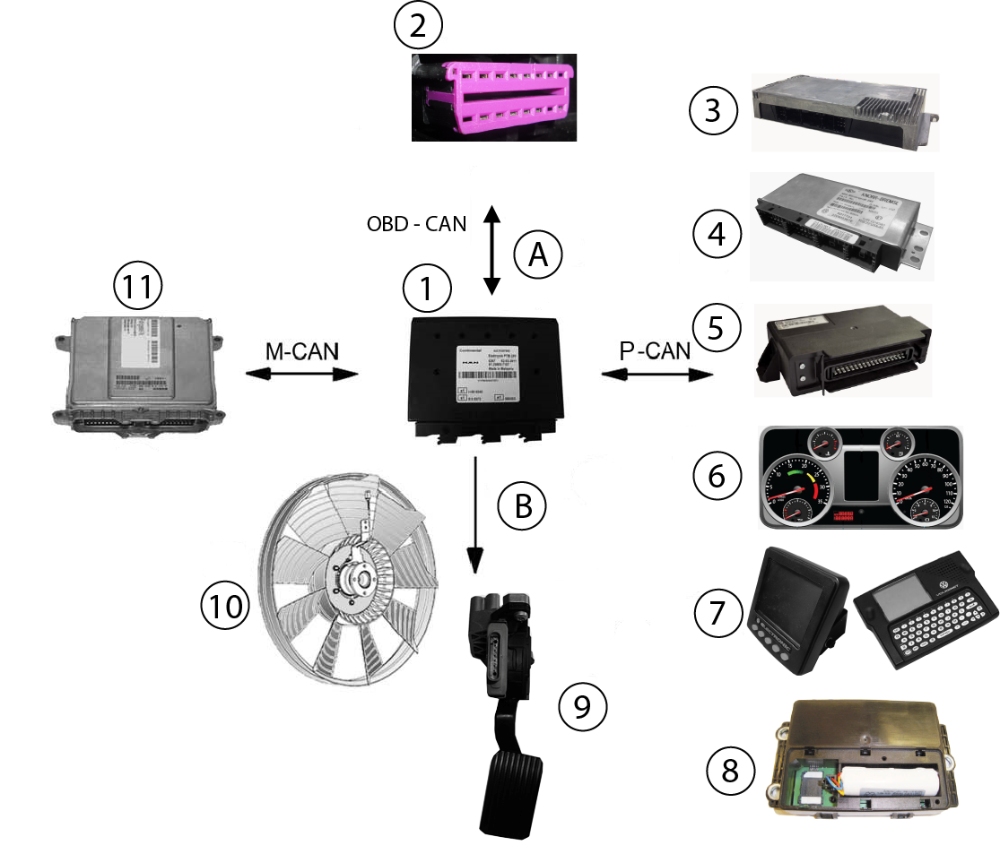
| (A) Sinais de entrada e saída. |
(1) - (A1124) Power Train Manager). |
(6) - Painel de Instrumentos. |
| (B) Sinais de saída. |
(2) - Tomada de diagnóstico - OBD. |
(7) - Volkslog/Volksnet. |
| (M - CAN) - Bus de dados CAN controle do motor. |
(3) - Unidade Lógica (LU). |
(8) - Módulo VTTS - Contran 245. |
| (OBD - CAN) - Bus de dados CAN com a tomada OBD. |
(4) - Módulo ABS - Knorr. |
(9) - Pedal do acelerador. |
| ( P -CAN) - Bus de dados CAN conjunto propulsor. |
(5) - Módulo TCU (Transmission Control Unit). |
(10) - Ventilador com sensor de rotação. |
Descrição da Função
Power Train Manager (A1124)
A tensão operacional do módulo PTM (Power Train Manager) é de 24V. A alimentação de tensão é fornecida pela central elétrica.
O Power Train Manager é protegido por 2 fusíveis:
– Fusível para a linha 30 (bateria), terminais X5/X6 da PTM (Power Train Manager).
– Fusível para a linha 15 (positivo pós ignição), terminal X3 da PTM (Power Train
Manager), No exemplo da ligação abaixo é da família
Constellation, e para as outras famílias de veículos (Ônibus e Worker), altera apenas o número do fusível de proteção.
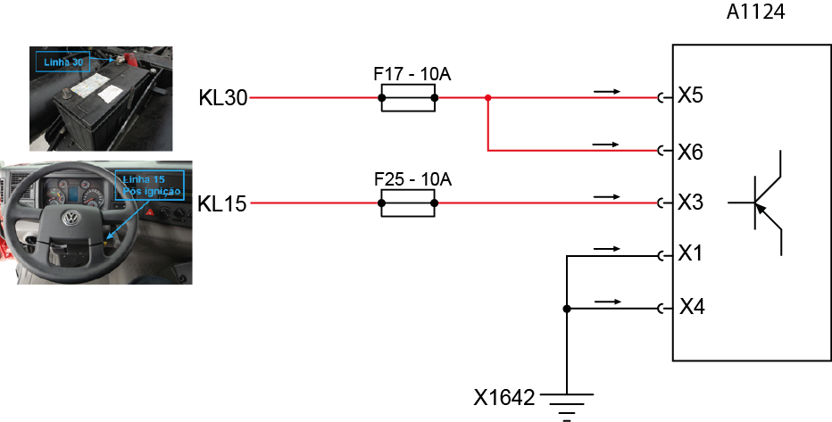
KL30 - Linha 30.
KL15 - Linha 15.
X1642 - Ponto de massa na coluna direita.
A1124 - Módulo PTM (Power Train Manager).
Exemplo da central elétrica do Constellation, figura abaixo.

Detalhes da PTM (Power Train Manager)
Lado superior (1)

(1) Superfície de refrigeração
Não devem ser fixados etiquetas adesivas na superfície de refrigeração (troca de calor)
Lado inferior com orifícios de drenagem
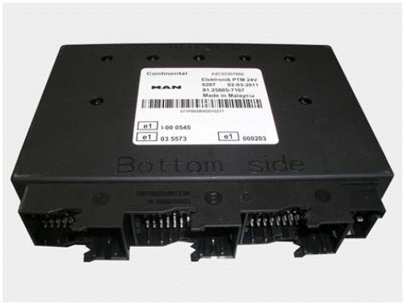
Funções
– Arrefecimento do motor (nível do líquido de arrefecimento)
– Aquecimento do motor
– Controle de rotação intermediária
– Tomadas de força
– Armazenamento de dados
– Dados de manutenção
– Etc.
Através
da rede de dados CAN conjunto propulsor (P-CAN) o Power Train Manager
está interligado com os módulos de controle para freios, transmissão,
suspensão pneumática, retarder, computador central de bordo, etc. A
comunicação entre o Power Train Manager e o módulo EDC7 é realizada
através do bus de dados CAN motor (M-CAN).
Diversos interruptores, sensores e atuadores estão interligados com o Power Train Manager para mais funções.
O
Power Train Manager (A1124) possui uma programação EOL (End Of Line). Além
dos registros de parâmetros do fabricante do sistema, no fim da linha
de produção, ainda são registrados outros parâmetros específicos do veículo. Os registros de parâmetros podem
ser verificados e, se necessário, modificados com MCO-08.
Os
códigos de diagnose armazenados na memória de diagnose do Power Train
Manager são lidos através da tomada de diagnose por meio de MCO-08.
No
lado inferior do alojamento do Power Train Manager encontram-se 10
aberturas para drenagem de água condensada. Pelo menos uma abertura de
drenagem precisa estar aberta para que a água condensada seja drenada.
Por este motivo, o Power Train Manager está instalado na posição
horizontal.

(1) Aberturas de drenagem
|
MCO-08
Após a seleção do „menu principal“ o item do menu „computador central /
instrumentação“ deve ser selecionado e então o tipo de sistema "FFR /
PTM / MFR" . Depois deve ser selecionado no „menu de seleção diagnose
PTM“ o item "identificação de módulos de controle“. Neste item do menu
de seleção são encontrados todos os dados importantes sobre módulos de
controle do veículo.
A memória de falhas sempre é lida em primeiro lugar.
|
Disposição dos pinos dos plugues
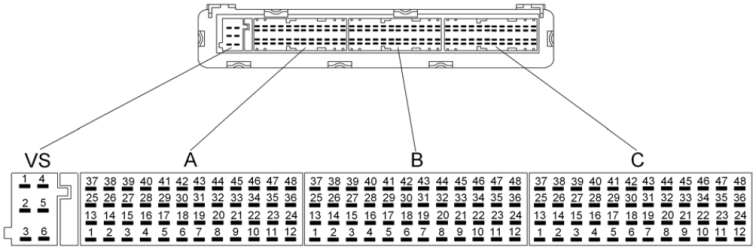
Plugue de alimentação (Ligação X)

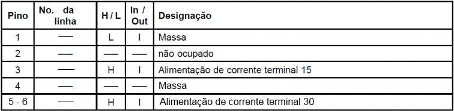
H = high
L = low.
I = input
O = output
Plugue A (Ligação A)
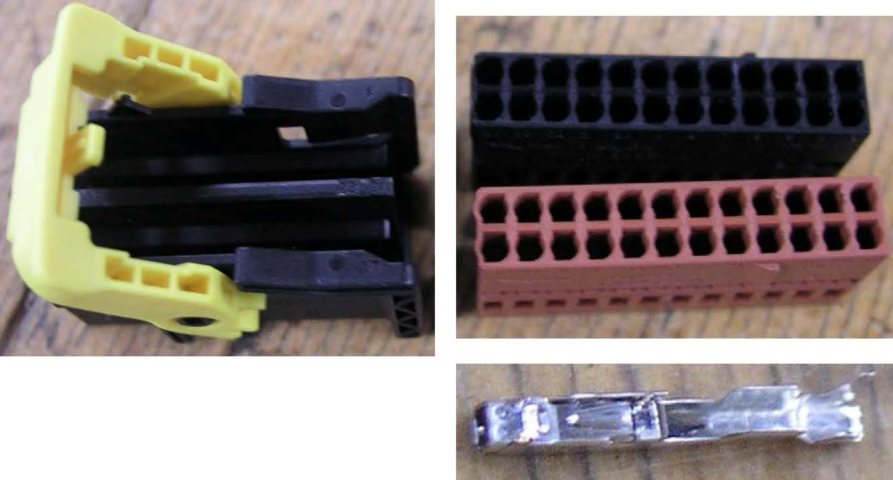
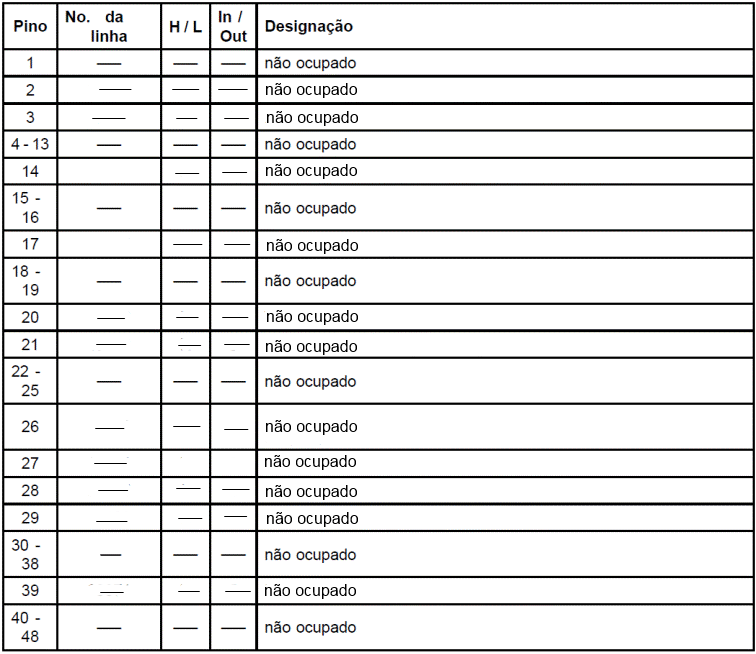
H = high
L = low.
I = input
O = output
Plugue B (Ligação B)
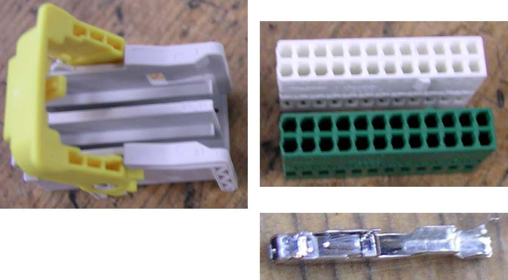
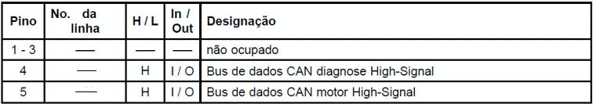
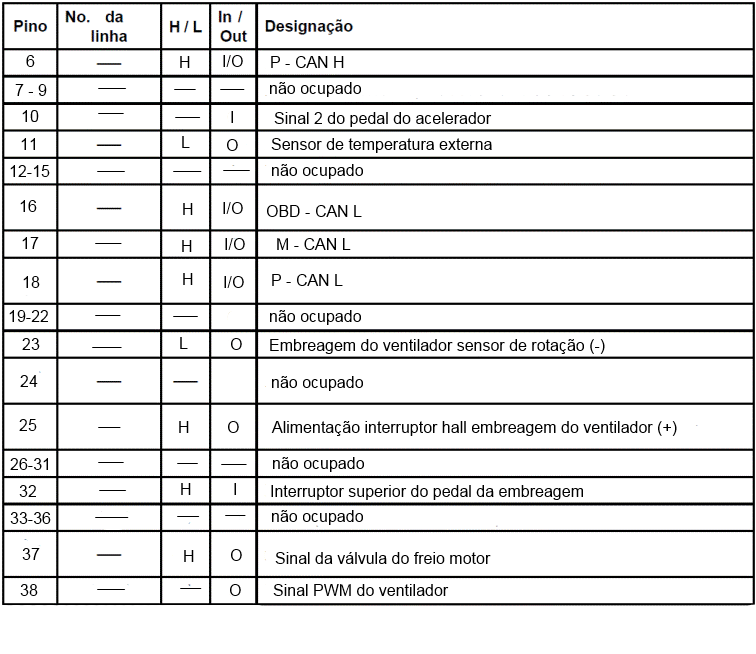
H = high
L = low.
I = input
O = output
Plugue C

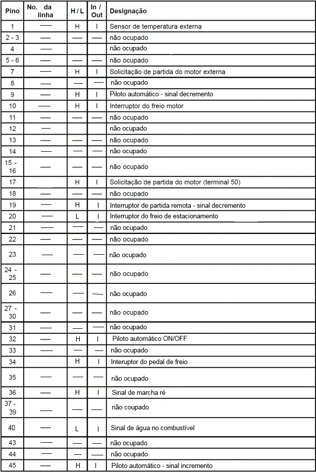
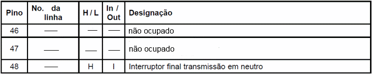
H = high
L = low.
I = input
O = output
Dados técnicos:

|
Avisos para reparos
– Remover e instalar o módulo de controle PTM (Power Train Manager)
Se for necessário remover e instalar um Power Train Manager existente, uma parametrização não é necessária.
– Substituir o módulo de controle PTM (Power Train Manager).
Se o Power Train Manager for substituído, uma parametrização do Power Train Manager deve ser realizada.
– Parametrizar o módulo de controle PTM (Power Train Manager)
Uma parametrização também é necessária, se o Power Train Manager não foi parametrizado corretamente.
|
Conjunto de pedais
O conjunto de pedais é uma unidade pré-montada e testada que leva na sua placa base:
– o pedal do acelerador (A410) com sensores sem contato,
– o pedal do freio com a válvula do freio de serviço,
– o pedal da embreagem com o cilindro sensor da embreagem / servo da embreagem.
A
unidade completa é inserida pela frente na parede frontal do veículo e
a unidade fecha a parede frontal. As conexões das linhas hidráulicas no
cilindro sensor da embreagem / servo da embreagem e as conexões de ar
comprimido na válvula do freio de serviço estão localizadas na frente
da parede frontal. As conexões elétricas para o chicote elétrico da
cabine saem do lado interno do conjunto de pedais.
Pedal do acelerador (A410)

Descrição pedal do acelerador
Existe uma mola de aço no pedal do acelerador para produzir as forças
do pedal do acelerador. O aviso de retorno sobre a posição do pedal do
acelerador é realizado
através de dois sensores Hall que trabalham sem contato físico. Os
sinais analógicos são convertidos em dois sinais PMV através de dois
circuitos eletrônicos. Os sinais PWM emitidos correspondem à
posição atual do pedal do acelerador. Os sinais PWM são representados
graficamente na tela do MCO-08.
Os valores PWM do limites mecânicos são gravados como parâmetros no
flash do Power Train Manager (A1124), isto vale para os dois sinais
PWM. Sobre a base de PWM1 é normatizada a posição do pedal do
acelerador entre os limites mecânicos. Em caso de falha, PWM2 é usado.
Se ocorrer uma falha no pedal do acelerador, uma limitação
parametrizada de rotação é ativada.
Entre as posições de
marcha lenta e de plena carga e em conexão com a atual rotação do
motor, é determinada através do mapa característico do pedal do
acelerador, a especificação de momentos para o pedal do acelerador. Os sinais "marcha lenta“ e "Kickdown“ são
determinados a partir da posição normatizada do pedal do acelerador. Se
a posição do pedal do acelerador for menor que o limite da marcha
lenta, a avaliação é marcha lenta = ativa. Acima do limite o momento do
pedal do acelerador é emitido. Este alcança no ponto parametrizado de
plena carga os 100% (90%). Se o pedal do acelerador for acionado além
deste ponto (e se ultrapassar o limite para kickdown), a função
kickdown é ativada. Esta função possui uma histerese. A função é
desativada no instante que a posição do pedal do acelerador cair abaixo
do limite de plena carga. Em conexão com a informação sobre o pedal do
acelerador a posição do pedal do acelerador é verificada quanto à
plausibilidade. Se a posição do pedal do acelerador estiver acima do
ponto da marcha lenta, a posição atual do pedal do acelerador é adotada
como valor de marcha lenta. No instante que a posição do pedal do acelerador voltar a cair abaixo deste valor, o valor da
marcha lenta volta a ser ajustado até o valor calibrado do flash do
Power Train Manager.
Para que, por ex. na partida em aclive, também possa ser acionado o
pedal do freio, a checagem do pedal é realizada apenas quando o pedal
do
acelerador for acionado antes do pedal do freio. Haverá um
registro de faha na memória da PTM somente ao exceder 5 vezes, quando a
posição de marcha lenta não for alcançada.
Disposição dos pinos dos plugues
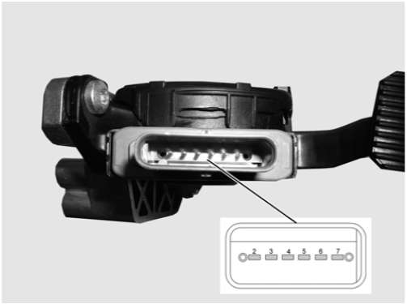
Plugue: 8 pinos / Codificação A
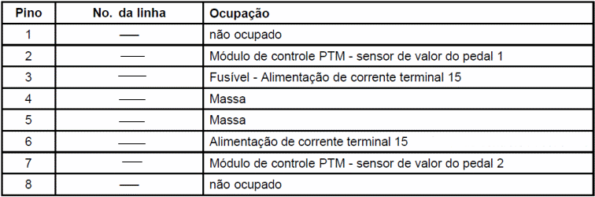
Dados Técnicos
Tensão de alimentação: 10 - 32V
Sobretensão: 36V por máx. 1 hora
Tensão de teste: 27,6V
Tensão nominal: 24V
Demanda de corrente em funcionamento:
Corrente máxima: < 15mA a 32V
Corrente mínima: < 5mA a 10V
Todas as entradas e saídas como também as linhas de sinal PWM entre si são protegidas contra curto circuito e inversão de pólos.
Faixas de trabalho pedal do acelerador

|
Importante!
Apenas ao encontrar um limite mecânico final
(kickdown) o acionamento do pedal do acelerador é completo
|
No osciloscópio ficam visíveis a relação de toque e os movimento sem direções opostas dos sinais PWM.
Imagem do osciloscópio PWM1
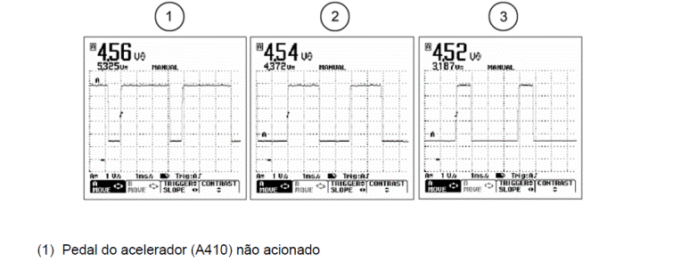

No MCO-08 os sinais PWM1 e PWM2 aparecem sincronizados (veja ilustração).
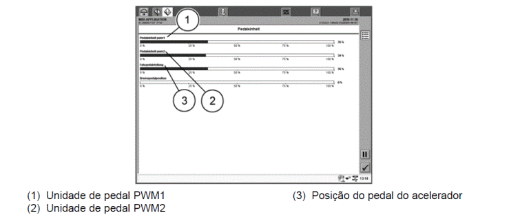
|
Aviso para reparo
Remover e instalar, substituir o pedal do acelerador.
- Caso o pedal de acelerador seja removido e reinstalado, uma calibração não é necessária.
|
Pedal da embreagem
Teste de função da embreagem
A função da embreagem é verificada por meio de MCO-08. No „menu
de seleção diagnose PTM“ o item do menu "Teste de função da embreagem“.
Na janela "ponto de separação / ponto de arrasto embreagem“ é
determinado o ponto de separação ou o ponto de arrasto da embreagem,
isto serve para a detecção das causas de ruídos durante as mudanças de
marchas.
Calibração
O sistema precisar estar ventilado para a calibração do curso da embreagem.
A calibração ou o ajuste do pedal da embreagem é realizado por meio de
MCO-08. Após a seleção do "menu de seleção diagnose PTM“
selecionar o item do menu "Calibração“.
Existem duas possibilidades de calibração do pedal da embreagem:
– Calibração do pedal da embreagem com substituição do disco
– Calibração do pedal da embreagem sem substituição do disco
A janela "ajuste pedal da embreagem“ é exibida automaticamente após a
seleção "Calibração do pedal da embreagem com substituição do disco“ .
Isto serve para determinar os limite final do pedal da
embreagem( batente), o qual deve ser pressionado totalmente. Esta posição deve
ser mantida por aprox. 3 segundos. Soltar o pedal da embreagem depois.
Este processo deve ser repetido duas ou três vezes, até que não se
verifiquem mais variações do limite mecânico final.
Os valores apurados durante a calibração (mínimo e máximo) devem ser
armazenados. Como etapa seguinte deve ser desligada a ignição. Os
valores são armazenados, e a seguir a ignição é ligada novamente. O
pedal da embreagem está calibrado.
Embreagem do ventilador com sensor de rotação (A968)
A embreagem do ventilador com sensor de rotação (1) trabalha conforme a
demanda e previne desta maneira o superaquecimento do motor.

Em situação de carga reduzida do motor, o fluxo do ar que passa pelo
radiador é suficiente para manter a temperatura do líquido de
arrefecimento na faixa ideal. Com isto, a embreagem do ventilador
trabalha pouco, isto significa que a rotação do motor é maior que a
rotação da embreagem do ventilador.
Com o aumento da carga – por ex. em aclives, com reboque – a
temperatura aumenta no compartimento do motor e com isto a temperatura
do líquido de arrefecimento sofre um aumento significativo. Então a
embreagem do ventilador trabalho em alta rotação.
O Power Train Manager aciona uma válvula magnética no ventilador por
meio de um sinal PWM. O sensor de rotação no ventilador devolve um
sinal ao Power Train Manager.
|
Aviso:
Em caso de falha na tensão de alimentação, a embreagem do ventilador é
ativada com capacidade total, isto significa que não pode haver
superaquecimento do motor, uma vez que o ventilador trabalha com a
rotação máxima possível.
|
Função:
Uma tensão de 24V ativa o magneto, este por sua vez puxa a contraplaca, a mola da
válvula fecha o orifício, a embreagem do ventilador desliga. Zero de
tensão desativa o magneto, a contraplaca volta à posição inicial, a
mola da válvula abre o orifício, a embreagem do ventilador é ativada.
Em conexão com o sinal PWM, um ajuste sem escalonamentos da rotação do
ventilador é possível. A rotação do ventilador depende da:
– temperatura do líquido de arrefecimento
– temperatura externa
– temperatura do ar de admissão
– retarder secundário ou pritarder

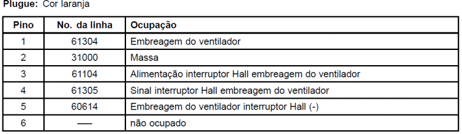
|
Avisos para reparos
– Remover e instalar a embreagem do ventilador com sensor de rotação
Veja nas instruções de reparo em „Remover e instalar a embreagem do ventilador“.
– Substituir a embreagem do ventilador com sensor de rotação
Veja nas instruções de reparo em „Remover e instalar a embreagem do ventilador“.
|
DESCRIÇÃO DOS COMPONENTES
Power Train Manager (A1124)

Família Constellation
Está localizado acima da Unidade Lógica (LU) no
compartimento elétrico (caixa de fusíveis), que fica
na posição inferior em frente ao banco do passageiro
(conforme imagem abaixo).

|
Família Worker (Kairos)
O módulo Power Train Manager (PTM) está localizado na coluna esquerda inferior, em acima do pedal da
embreagem (conforme imagem acima).
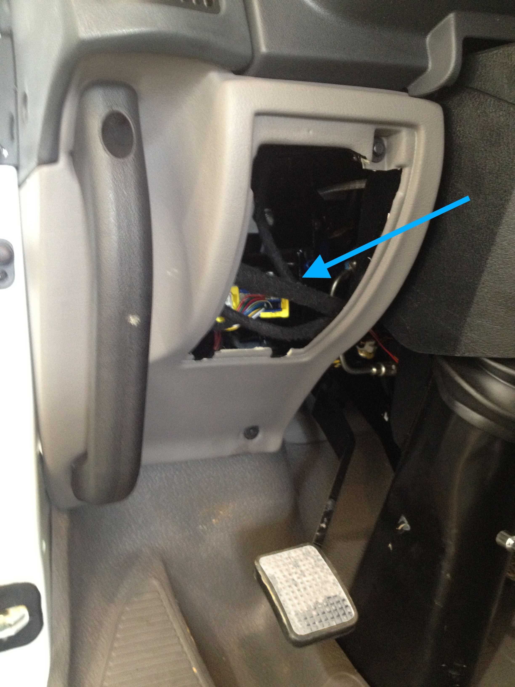
|
Para Ônibus
O Power Train Manager (1) está localizado na frontal do chassi (o local pode variar dependendo de cada encarroçador)

|
Embreagem do ventilador com sensor de rotação (A968)
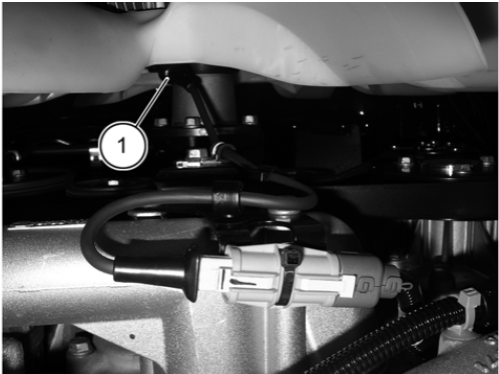
Local de instalação

A embreagem do ventilador com sensor de rotação (1) encontra-se no lado dianteiro do motor.
DIAGNOSE
Geral
A maioria dos módulos que podem ser testados com MCO-08, estão
ligados através de uma linha K à tomada de diagnose X200 Pino 3 ou 4.
Através da linha K, o sistema de diagnose agita um determinado módulo
de controle. Este responde e transmite as falhas arquivadas na memória
de diagnose de modo digital através da linha K.
Módulos de controle que são contatados via CAN do conjunto propulsor, e
que não possuem mais a linha K, como por ex. TBM, ECAS2 ou EBS, são
contatados via CAN de diagnose do PTM. O PTM representa aqui uma
gateway.
Tomada de diagnose HD-OBD (X200)
Os códigos de diagnose SPN podem ser lidos por meio de MCO-08 a
partir das memórias de diagnose de diversos módulos de controle
(conexão pela tomada de diagnose X200) e são exibidos na tela de
MCO-08.
A tomada de 16 pólos HD-OBD conforme ISO 15031-3 substitui a anterior
tomada de diagnose MAN de 12 pólos. HD-OBD é a abreviatura de Heavy
Duty-Onboard Diagnose. Heavy Duty representa aqui um sinônimo de
veículos comerciais pesados.
Esta normatização OBD possibilitará futuramente, em escala mundial para
quase todos os veículos, um sistema de diagnose universal para
componentes relevantes para emissões.
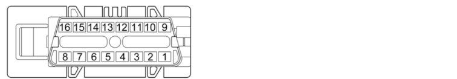
Tabela de disposição de pinos nos plugues
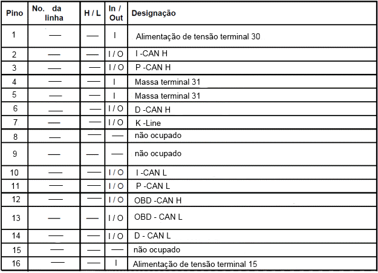
Local de instalação tomada de diagnose
Família Constellation
A tomada OBD está localizado ao lado da Unidade Lógica (LU) no
compartimento elétrico (caixa de fusíveis), que fica na posição
inferior em frente ao banco do passageiro (conforme imagem abaixo).

|
Família Worker (Kairos)
A tomada OBD está localizado no compartimento elétrico na caixa de
fusíveis, que fica na posição inferior em frente ao banco do passageiro
(conforme imagem abaixo).
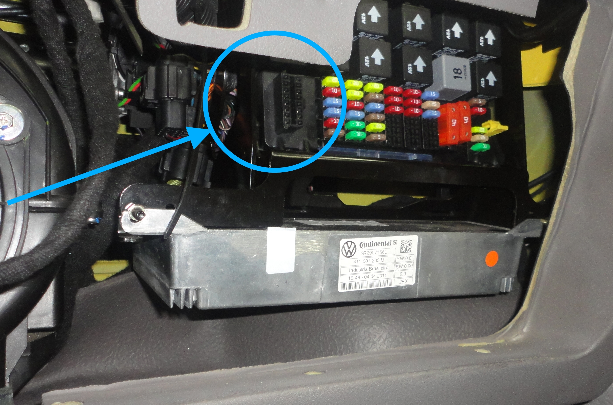
|
Para Ônibus
A tomada OBD está localizado na frontal do chassi, conforme imagem abaixo (o local pode variar dependendo de cada encarroçador)

|
Funções principais da diagnose
As principais funções são:
– Reconhecimento de falhas
– Análise de falhas
Ocorrência
Importância
Identificação
Tipo de falha (estática, esporádica,...)
– Armazenar falhas
– Simulação para busca de falhas
Indicações de interferências
O módulo eletrônico de controle possui funções próprias de diagnose
para todas as saídas e diferentes entradas. As falhas nas entradas e
saídas e falhas internas são reconhecidas, analisadas e armazenadas na
memória de diagnose do módulo de controle.
Adicionalmente, as falhas são exibidas no display da instrumentação e /
ou indicadas através da luz central de advertência (H111) em conexão
com a luz de controle do sistema correspondente.
Nos casos de indicações STOP, adicionalmente a palavra STOP aparece no
display e a luz central de advertência (H111) pisca em VERMELHO com
intervalos de 1 Hz.
A luz central de advertência (H111) acende:
– AMARELO significa uma indicação de função ou uma advertência
– VERMELHO significa uma interferência
A luz vermelha de advertência tem prioridade sobre uma luz amarela de
advertência. Uma indicação de função ou uma advertência (AMARELA)
sempre é posta de lado em favor de uma indicação de falha (VERMELHA).
No caso de um colapso de CAN (instrumentação - computador central de
bordo) a luz central de advertência (H111) é acionada em VERMELHO.
Todas as indicações atuais de interferências estão disponíveis com a
ignição em "ON", (terminal 15), independentemente do estado do veículo.
As falhas diagnosticadas e armazenadas no módulo de controle podem
causar diferentes riscos, e, por este motivo, cada falha individual
recebe uma prioridade.
Indicações de status FMI (Failure Mode Identication)

Prioridade na indicação / Posição de software de diagnose R22 e R24
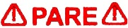
|
Parada obrigatória
|
Indica que o sistema de proteção do motor foi
ativado. Uma falha grave pode estar ocorrendo no
motor. Se acender com o veículo em movimento,
PARE o veículo tão logo as condições de tráfego
sejam seguras. Quando a lâmpada se acende,
inicia o processo de despotenciamento para a
proteção do motor.
|
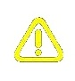
|
Falha leve
|
Indica que uma falha leve está ocorrendo. Não
é necessário parar o veículo. Na primeira
oportunidade, dirija-se a um concessionário
MAN Latin America. No visor aparecerá o ícone
a qual falha está associada.
|
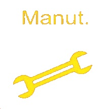
|
Manutenção
|
Acende ao atingir o período programado para
manutenção.
|
Caixa de teste
Com a ajuda da caixa de teste, todos os componentes do Power Train Manager podem ser testados, em
condição de instalados no veículo, nas suas funções.
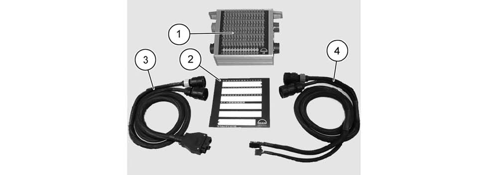
Posição
|
Designação
|
1
|
Caixa de teste com pontes de medição
|
2
|
Placa de cobertura para caixa de teste 54 pólos
|
3
|
Ramais de cabos 54 pólos (Pino) para conectar ao chicote elétrico do veículo.
|
4
|
Ramais de cabos 54 pólos (tomada) para conectar ao módulo de controle.
|
Programa de detecção de falhas
O seguinte programa de detecção de falhas abrange as falhas que podem ser reconhecidas pela memória
de diagnose.
A sequência dos testes corresponde à sequência numérica dos códigos de diagnose (SPNs),
independentemente da importância da falha.
No teste de entrada de um veículo, a memória de diagnose sempre deve ser lida completamente e todas as
falhas armazenadas devem ser documentadas. Isto é importante por que durante a detecção de falhas
no sistema, cabos e respectivamente componentes precisam ser desconectados, o que pode causar a
emissão e o armazenamento de correspondentes mensagens de falha. Por este motivo, a memória de
diagnose deve ser apagada sempre após verificações intermediárias. Se houver peças substituídas, um
comprovante da falha, impresso pelo MAN-cats, deve ser anexado para o reembolso dos custos (extrato
da memória de diagnose, vide acima).
Exceções desta regra são admissíveis apenas após consulta com Assistência Técnica Man Latin América.
Da mesma maneira, a substituição em garantia dos módulos de controle só pode ser efetuada após
consulta com Assistência Técnica Man Latin América.
Após a eliminação da falha e um controle, repetir o teste e apagar a memória de diagnose.
A memória de diagnose sempre deve ser apagada por meio de MAN-cats.
Por princípio, antes de qualquer substituição de componentes ou módulos de controle, a memória
de diagnose deve ser apagada e a falha deve ser observada. Por princípio, nos casos de múltiplos
registros de falha, primeiro devem ser considerados os correspondentes avisos de testes que
não requerem a substituição de componentes ou módulos de controle. Antes de qualquer reparo
ou substituição de componentes ou módulos de controle, a ignição deve ser necessariamente
desligada. Se a ignição não for desligada, ocorrerão registros de falhas nas memórias de diagnose
(SPNs) nos diferentes módulos eletrônicos de controle.
A etapa de teste "testar linhas" sempre deve ser processada da seguinte maneira:
– Interrupção ou resistência de transferência (por ex. por causa de contatos de tomadas expandidos,
plugues e contatos de tomadas deslocados ou conectores oxidados)
– curto circuito para negativo
– curto circuito para positivo
– curto circuito para linhas adjacentes
– contatos intermitentes
– água ou umidade no chicote elétrico
Chicotes elétricos podem estar danificados mesmo com a mangueira ondulada aparentemente intacta
na parte externa!
Quando Medições de resistência são realizadas, a conexão para o módulo de controle deve ser
interrompida.
Observar os diagramas de circuito correspondentes ao veículo!
Medição de resistência
– Ignição „DESLIGA“
– A caixa de teste é conectada entre o Power Train Manager e o veículo.
– Todas as pontes na caixa de teste devem estar fechadas. A ponte, na qual a medição é realizada,
precisa estar aberta.
Medição de tensão
– A caixa de teste é conectada entre o Power Train Manager e o veículo.
– Ignição „LIGA“
– Todas as pontes na caixa de teste devem estar fechadas. Para a etapa de medição interruptor da coluna
de direção "Tempomat/ transmissão“ a medição também é realizada com a ponte aberta.
A medição de tensão é realizada com o motor em funcionamento e o veículo parado.
SPN - Descrição do código de diagnose
A seguir, uma relação dos códigos de diagnose, que em caso de falha são exibidos no display da
instrumentação ou® na tela do MAN-cats II. Na citada descrição do código de diagnose são documentadas
as causas das falhas e as reações.
SPN - Suspect Parameter Number - Local da falha
FMI - Failure Mode Identification - Tipo de falha
|
|